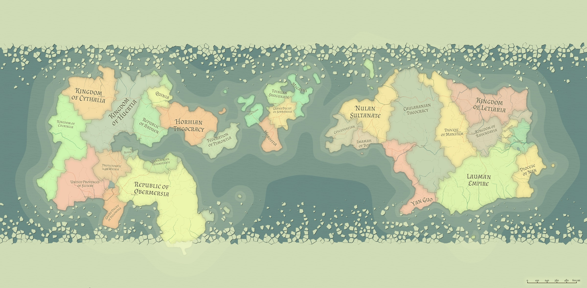
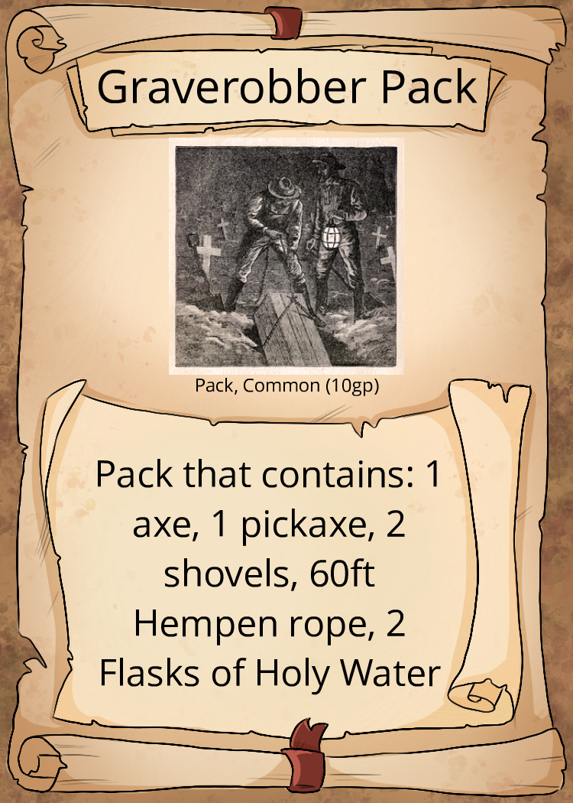
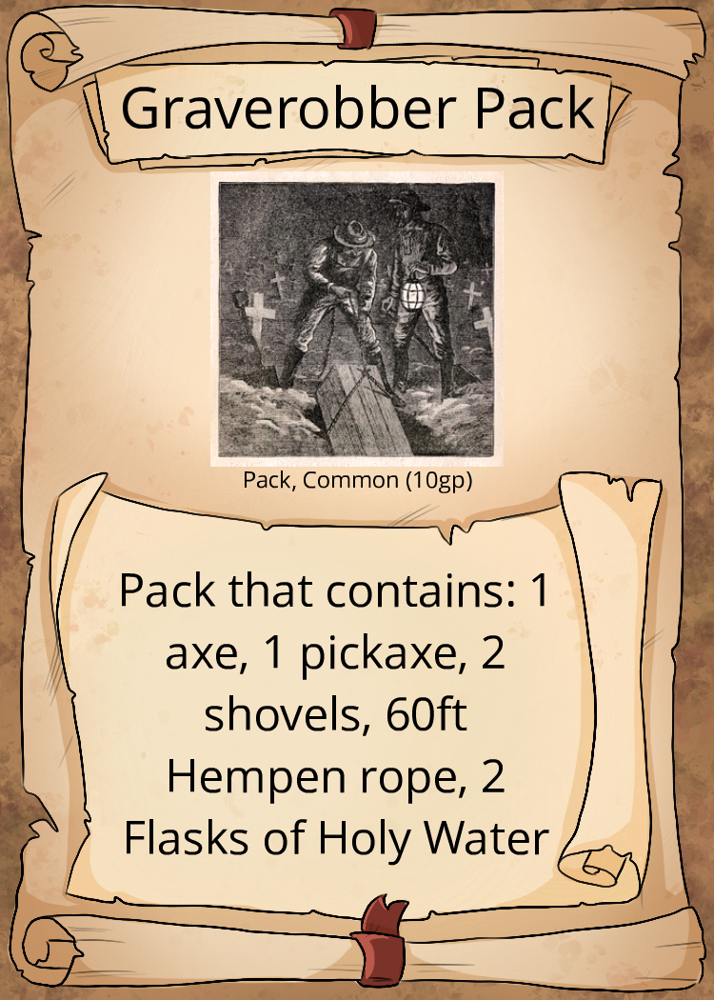
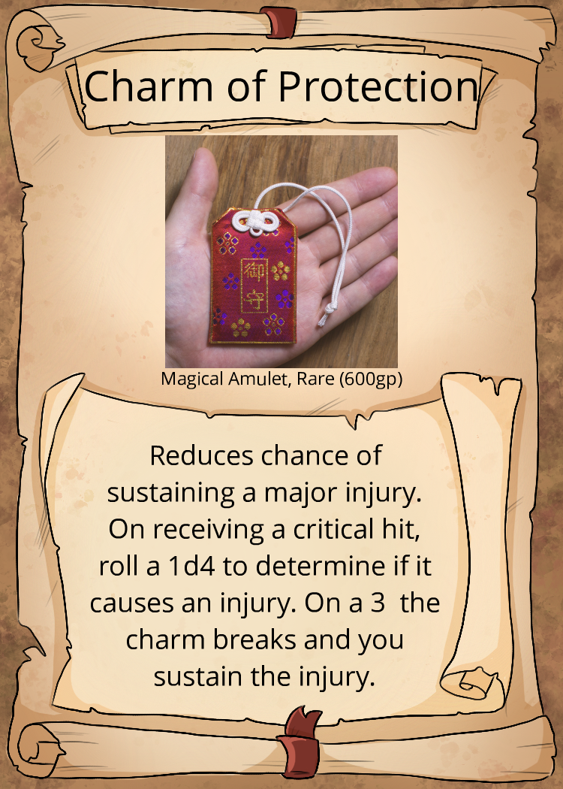
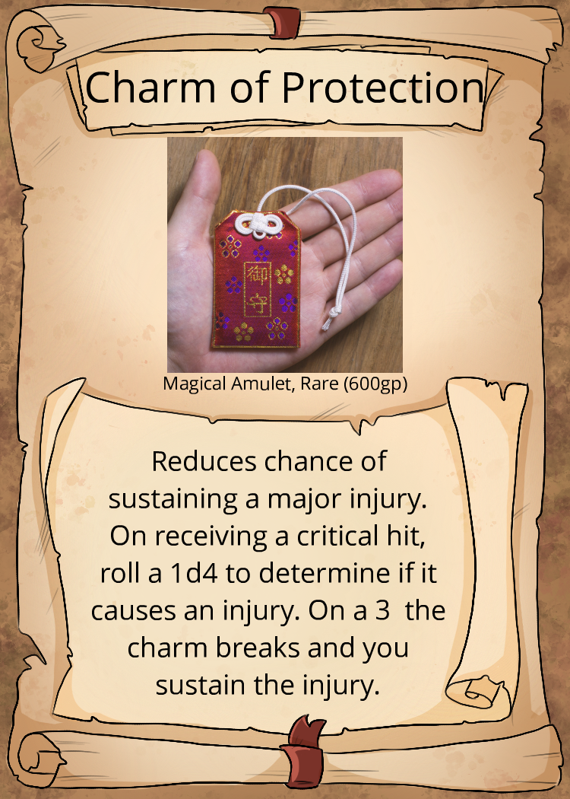
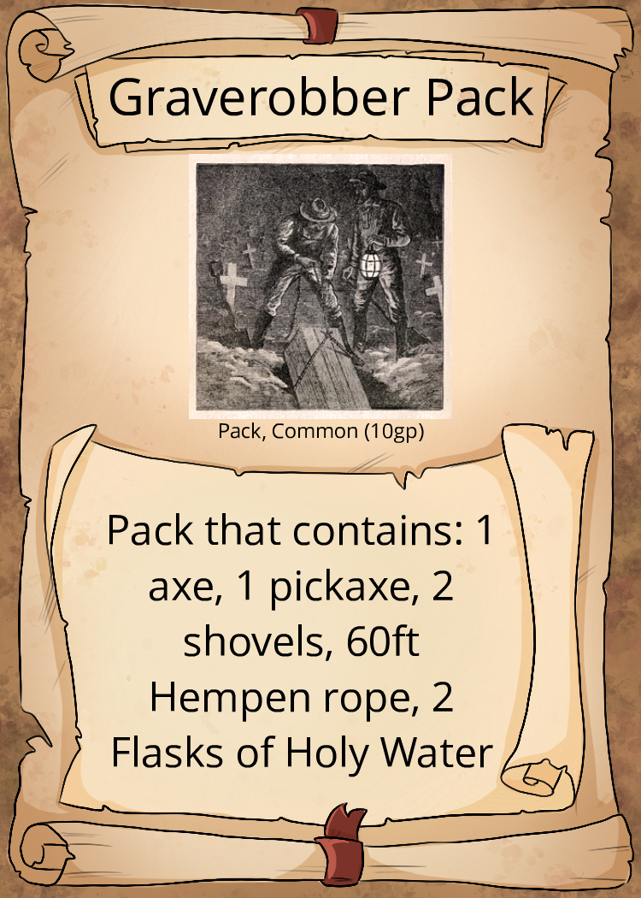
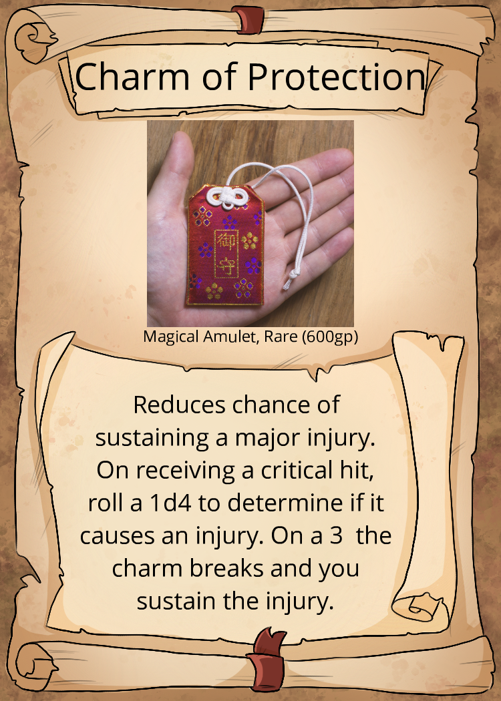

One Shot Ideas
Map:

World:
Technology:
- Steam Trains
- Steam Ships
- Electric Light Sources in Major Advanced Cities
- Blackpowder(in the east and in the west its called gunpowder)
Think early 19th century.
History/Major Historic events:
Then:
- Age of Calamity: It is said that up to around 3000 years ago, the earth was in a constant apocalyptic state ravaged by war and disease. Virtually no written history exists about it and many debate if it actually happened.
- Age of Prosperity: The beginning of written history. A 2143 year long period, where intelligent races started to build societies and invented many thing like the calender, sailing, bows and much more. Many large nations and religions were created in this era.
- Age of Magic: A 643 year long period of stagnation where magic overshadowed science. The easter and western continent discovered each other through magic users. Ended when a mysterious disease (later known as the Arcane Plague) killed 94% of all spell casters in the world. This caused magic usage to become extremely unpopular and even hated.
Now:
- Current year: Age of Enlightenment - 1337 Years after the Age of Magic (AOE1337)
- (AOE126) After spending an entire century rediscovering certain scientific phenomena that had been forgotten in the previous era, chemists in Yan Guo discover the way of making gunpowder.
- (AOE776) A mysterious man appears on a battlefield and kills 1000 soldiers.
- (AOE818) (Unintelligent) Monster sightings reach an all time high since the end of the magic era.
- (AOE823) Early printing press is invented. Information becomes more widely spread.
- (AOE864) As monster sightings increase, some people dedicate their lives to destroying them.
- (AOE965) 6 well known hunter families/clans form an alliance to hunt the man who would later become known as the first intelligent monster in recorded history. The vampire.
- (AOE969) After defeating the vampire and discovering that he was only the first of many, the Hunter Organization was formed by the survivors of the alliance. The Organization HQ is located in the Republic of Obermersia
- (AOE999) Thanks to the Organization the world as made great new discoveries in chemistry, physics and astronomy.
- (AOE1054) For 30 years monster sightings have become increasingly rarer.
- (AOE1095) The Hunter Organization is disbanded.
- (AOE1237) The steam engine is invented. Many other intelligent monsters have been discovered at this point.
- (AOE1261) The first steam powered train makes its first trip.
- (AOE1311) A war breaks out in the eastern continent between 3 countries Yan Guo, The Caularanian Theocracy and Laumen Empire. Due to different motives, the western countries become involved but that then leads to conflicts with each other. This is later known as the Global War.
- (AOE1313) Amid the waring world, monster appearances rise once again. It is rumored that Quinia even weaponized some of them.
- (AOE1320) After 9 years the war finally ends.
- (AOE1322) Due to global concerns. The Hunter Organization is reestablished and is now located at a neutral zone belonging Bobach.
- (AOE1326) A Lich King rises in the Imamah of Bol.
- (AOE1329) The light bulb is invented.
- (AOE1330) The Organization defeats the Lich King and its army. Becomes recognized by most countries and is officially backed by some despite losing a big part of its fighting force.
- (AOE1335) Over the course of 6 months there have been 10x as many sightings of eldritch horrors as in the previous 10 years combined.
- (AOE1336) The Hunter Organization helping to keep the world safe but is understaffed and accepting recruits.
- (AOE1337) After completing the basic training and working under you mentor. You are now given you first independent task along with a group of others.
Religion:
Godless World: Page 194-201
The general populous is not aware that their original gods have been dead for millennia. Most modern religions are based on the worship of Seraphs. Some religions only acknowledge one of them as being a real god while other believe in several or even all of them. There are also religions that worship Daemons as gods.
Noteable Religions
Crime: (Not relevant rn)
- Opium Trade
- Weapon Smuggling
- Slave Trade
Races in the World by population:
- Common: Humans, Half-Elves, Dwarves
- Uncommon: Elves, Half-Orcs, Gnomes
- Rare: Satyr, Tabaxi, Halfling, Dragonborn, Hobgoblin
- Very Rare: Orc, Leonin, Triton, Firbolg
- Extremely rare subhumans: Shifters, Changelings, Kalashtars, Aasimars, Simic Hybrids, Tiefling etc
Classes in the world by existence:
- Common (no limit): Fighter, Rogue, Ranger
- Uncommon (up to 2 of any): Bard, Barbarian, Warlock
- Rare (one of any per party but max 2 of all): Paladin, Monk, Artificer, Cleric
- Very rare (one per party): Wizard, Sorcerer, Druid
The Warlock as a Hunter. Because of the rare nature of magic users in the world. The Organization actively tracks down Warlocks who made a pact out of stupidity or any other mundane reason and tries to recruit them to their ranks. In some cases hunters have made pacts willingly to fight fire with fire.
Hunter Organization:
An Organization dedicated to eradicating monsters around the world. Currently backed by several nations in exchange for keeping the world safe. Originally established in the year AOE269 by the survivor of the alliance that fought the first known intelligent monster.
Hunter:
Hunters are people who have dedicated their lives to hunting any kind evil in the world.
Like most people, Hunter range from genuinely good people to those who think any means justify the result.
There are different stages to being a hunter
- Stage 1 (Rookie): After basic training, which lasts for 4-5 months and includes everything from theory to basic survival, rookies are usually part of 20-25 person squads that deal with the most common and weak types of filth. Those, who show promise, are usually promoted to Fellows withing the first 6-12 months of being in a squad.
- Stage 2 (Fellow): Fellow hunters are placed into a group of 3 who all work under a Master Hunter. The master hunters job is to train the Fellows by taking them to more dangerous missions. Once the Master Hunter decides that a hunter is ready. The Fellow is sent on a mission with a party of 3-5 other Fellows.
- Stage 3 (Good): After a fellow succeeds in their mission. They become a Good Hunter. Good Hunters hunt in a group of 3-5 people and take on medium threats.
- Stage 4 (Master): After serving as a Good Hunter for at least 3 years and becoming noticed for strength or great deeds, a Good Hunter can be offered to become a Master Hunter, who then starts training Fellows.
- Stage 4 (Great): Good Hunters, that either decline the offer of being a Master or for some other reason weren't fit for teaching.Great Hunters sometimes hunt alone, sometimes with a group.
- Stage 5 : ???
- Stage 6 : ???
Organization items: You get 3 tokens. (or maybe a certain number for the whole party) (game starting thing, later you could still buy them with gp)
- Scroll of Protection from Evil and Good. (2 token maybe)
- 30 Silvered ammunition for a weapon of choice. (1 token)
- 2 sticks of dynamite. (1 token)
 

 

Organization training and benefits:
- Monster Manual
- Flintlock pistol proficiency
- Horse Riding proficiency
- Bicycle Riding proficiency
- Basic survival skills and the ability to read maps.
- Free bedding and food at any official Organization outposts.
Backstory Benefits:
- You gain a free tool proficiency, language proficiency or weapon proficiency if it fits into your backstory.
Rules:
- Injuries - Only when taking a critical or when failing a saving throw with a nat 1.
- Madness
- Fear and Horror
- Drop Weapon - free action
- Change weapon
- Switch weapon for weapon or equip shield - 1 full action or 1 full movement.
- Switch empty hand for weapon - 1 bonus action or 1 half movement (Yes you can drop a weapon and then do this).
- If weapon is unsheathed when combat starts - On initiative roll 10+ you take out your primary weapon(s) instantly.
- Advantage
- Flanking - Gives +2 to attack
- Explosives - Bomb, Gunpowder, Dynamite
- (WIP) Firearms - Flintlock, Musket
- Advanced Weapons - Page 18-21
- Extended Feat List - Page 21-23
- Extended Spell List - Page 24-28
- Transformations - Page 36-75
Technology:
- Steam Trains
- Steam Ships
- Electric Light Sources in Major Advanced Cities
- Blackpowder(in the east and in the west its called gunpowder)
Think early 19th century.
History/Major Historic events:
Then:
- Age of Calamity: It is said that up to around 3000 years ago, the earth was in a constant apocalyptic state ravaged by war and disease. Virtually no written history exists about it and many debate if it actually happened.
- Age of Prosperity: The beginning of written history. A 2143 year long period, where intelligent races started to build societies and invented many thing like the calender, sailing, bows and much more. Many large nations and religions were created in this era.
- Age of Magic: A 643 year long period of stagnation where magic overshadowed science. The easter and western continent discovered each other through magic users. Ended when a mysterious disease (later known as the Arcane Plague) killed 94% of all spell casters in the world. This caused magic usage to become extremely unpopular and even hated.
Now:
- Current year: Age of Enlightenment - 1337 Years after the Age of Magic (AOE1337)
- (AOE126) After spending an entire century rediscovering certain scientific phenomena that had been forgotten in the previous era, chemists in Yan Guo discover the way of making gunpowder.
- (AOE776) A mysterious man appears on a battlefield and kills 1000 soldiers.
- (AOE818) (Unintelligent) Monster sightings reach an all time high since the end of the magic era.
- (AOE823) Early printing press is invented. Information becomes more widely spread.
- (AOE864) As monster sightings increase, some people dedicate their lives to destroying them.
- (AOE965) 6 well known hunter families/clans form an alliance to hunt the man who would later become known as the first intelligent monster in recorded history. The vampire.
- (AOE969) After defeating the vampire and discovering that he was only the first of many, the Hunter Organization was formed by the survivors of the alliance. The Organization HQ is located in the Republic of Obermersia
- (AOE999) Thanks to the Organization the world as made great new discoveries in chemistry, physics and astronomy.
- (AOE1054) For 30 years monster sightings have become increasingly rarer.
- (AOE1095) The Hunter Organization is disbanded.
- (AOE1237) The steam engine is invented. Many other intelligent monsters have been discovered at this point.
- (AOE1261) The first steam powered train makes its first trip.
- (AOE1311) A war breaks out in the eastern continent between 3 countries Yan Guo, The Caularanian Theocracy and Laumen Empire. Due to different motives, the western countries become involved but that then leads to conflicts with each other. This is later known as the Global War.
- (AOE1313) Amid the waring world, monster appearances rise once again. It is rumored that Quinia even weaponized some of them.
- (AOE1320) After 9 years the war finally ends.
- (AOE1322) Due to global concerns. The Hunter Organization is reestablished and is now located at a neutral zone belonging Bobach.
- (AOE1326) A Lich King rises in the Imamah of Bol.
- (AOE1329) The light bulb is invented.
- (AOE1330) The Organization defeats the Lich King and its army. Becomes recognized by most countries and is officially backed by some despite losing a big part of its fighting force.
- (AOE1335) Over the course of 6 months there have been 10x as many sightings of eldritch horrors as in the previous 10 years combined.
- (AOE1336) The Hunter Organization helping to keep the world safe but is understaffed and accepting recruits.
- (AOE1337) After completing the basic training and working under you mentor. You are now given you first independent task along with a group of others.
Religion:
Godless World: Page 194-201The general populous is not aware that their original gods have been dead for millennia. Most modern religions are based on the worship of Seraphs. Some religions only acknowledge one of them as being a real god while other believe in several or even all of them. There are also religions that worship Daemons as gods.
Noteable Religions
Crime: (Not relevant rn)
- Opium Trade
- Weapon Smuggling
- Slave Trade
Races in the World by population:
- Common: Humans, Half-Elves, Dwarves
- Uncommon: Elves, Half-Orcs, Gnomes
- Rare: Satyr, Tabaxi, Halfling, Dragonborn, Hobgoblin
- Very Rare: Orc, Leonin, Triton, Firbolg
- Extremely rare subhumans: Shifters, Changelings, Kalashtars, Aasimars, Simic Hybrids, Tiefling etc
Classes in the world by existence:
- Common (no limit): Fighter, Rogue, Ranger
- Uncommon (up to 2 of any): Bard, Barbarian, Warlock
- Rare (one of any per party but max 2 of all): Paladin, Monk, Artificer, Cleric
- Very rare (one per party): Wizard, Sorcerer, Druid
The Warlock as a Hunter. Because of the rare nature of magic users in the world. The Organization actively tracks down Warlocks who made a pact out of stupidity or any other mundane reason and tries to recruit them to their ranks. In some cases hunters have made pacts willingly to fight fire with fire.
Hunter Organization:
An Organization dedicated to eradicating monsters around the world. Currently backed by several nations in exchange for keeping the world safe. Originally established in the year AOE269 by the survivor of the alliance that fought the first known intelligent monster.Hunter:
Hunters are people who have dedicated their lives to hunting any kind evil in the world. Like most people, Hunter range from genuinely good people to those who think any means justify the result. There are different stages to being a hunter
- Stage 1 (Rookie): After basic training, which lasts for 4-5 months and includes everything from theory to basic survival, rookies are usually part of 20-25 person squads that deal with the most common and weak types of filth. Those, who show promise, are usually promoted to Fellows withing the first 6-12 months of being in a squad.
- Stage 2 (Fellow): Fellow hunters are placed into a group of 3 who all work under a Master Hunter. The master hunters job is to train the Fellows by taking them to more dangerous missions. Once the Master Hunter decides that a hunter is ready. The Fellow is sent on a mission with a party of 3-5 other Fellows.
- Stage 3 (Good): After a fellow succeeds in their mission. They become a Good Hunter. Good Hunters hunt in a group of 3-5 people and take on medium threats.
- Stage 4 (Master): After serving as a Good Hunter for at least 3 years and becoming noticed for strength or great deeds, a Good Hunter can be offered to become a Master Hunter, who then starts training Fellows.
- Stage 4 (Great): Good Hunters, that either decline the offer of being a Master or for some other reason weren't fit for teaching.Great Hunters sometimes hunt alone, sometimes with a group.
- Stage 5 : ???
- Stage 6 : ???
Organization items: You get 3 tokens. (or maybe a certain number for the whole party) (game starting thing, later you could still buy them with gp)
- Scroll of Protection from Evil and Good. (2 token maybe)
- 30 Silvered ammunition for a weapon of choice. (1 token)
- 2 sticks of dynamite. (1 token)


Organization training and benefits:
- Monster Manual
- Flintlock pistol proficiency
- Horse Riding proficiency
- Bicycle Riding proficiency
- Basic survival skills and the ability to read maps.
- Free bedding and food at any official Organization outposts.
Backstory Benefits:
- You gain a free tool proficiency, language proficiency or weapon proficiency if it fits into your backstory.
- Switch weapon for weapon or equip shield - 1 full action or 1 full movement.
- Switch empty hand for weapon - 1 bonus action or 1 half movement (Yes you can drop a weapon and then do this).
- If weapon is unsheathed when combat starts - On initiative roll 10+ you take out your primary weapon(s) instantly.
- Flanking - Gives +2 to attack